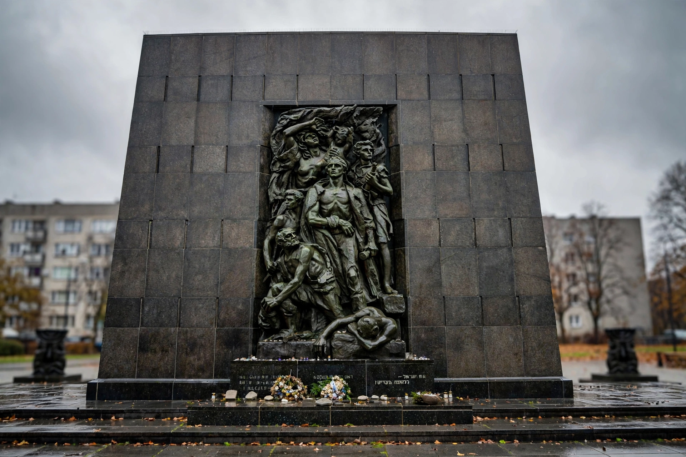

Mordechai Anielewicz
| Mordechai Anielewicz | |
|---|---|
| Born | 1919, Wyszków, Poland |
| Died | 8 May 1943 (aged 24), Warsaw Ghetto, German-occupied Poland |
| Known for | Leader of the ŻOB and commander of the Warsaw Ghetto Uprising |
| Movement | Hashomer Hatzair; Jewish Combat Organization (ŻOB) |

Mordechai Anielewicz (Polish: Mordecai Anielewicz; 1919 – 8 May 1943) was the leader of the Jewish Combat Organization (Żydowska Organizacja Bojowa, ŻOB), which led the Warsaw Ghetto Uprising in 1943, the largest act of Jewish armed resistance during the Holocaust. His name has become one of the most enduring symbols of Jewish resistance.
Early life
Anielewicz was born into a poor Jewish family in Wyszków, near Warsaw, and grew up in the Warsaw working-class suburb of Powiśle. He joined the Zionist-Socialist youth movement Hashomer Hatzair as a teenager and rose quickly as an organiser. After the German invasion of Poland in 1939 he attempted to open an escape route to Mandatory Palestine via Romania; later he returned to Warsaw, organising underground education, newspapers and armed self-defence within the ghetto.
Warsaw Ghetto Uprising
Following the mass deportations of summer 1942, in which some 265,000 Warsaw Jews were murdered at Treblinka, Anielewicz became commander of the newly formed ŻOB, a coalition of Zionist and socialist youth movements. When German forces entered the ghetto to resume deportations on 18 January 1943, ŻOB fighters under his command mounted the first armed resistance, forcing the Germans to withdraw after four days. Anielewicz then prepared for a final battle.
On 19 April 1943 the Germans returned with some 2,000 troops to liquidate the ghetto. A few hundred lightly armed ŻOB and ŻZW fighters held out for nearly a month in bunkers and ruins. Anielewicz commanded from the bunker at Miła 18. On 23 April he wrote in his last letter: "The dream of my life has risen to become fact. Self-defense in the ghetto will have been a reality. Jewish armed resistance and revenge are facts." On 8 May 1943 German forces surrounded and gassed the Miła 18 bunker; Anielewicz and some 100 fighters died there, most by suicide rather than surrender.
Legacy
Anielewicz was posthumously awarded the Virtuti Militari by the Polish government-in-exile. Kibbutz Yad Mordechai in Israel is named for him, and its statue of Anielewicz is a national memorial site; streets and schools in Israel and Poland bear his name. The site of the Miła 18 bunker is marked by a memorial mound in Warsaw.
See also
Warsaw Ghetto Uprising · Warsaw Ghetto · Jewish resistance in German-occupied Europe